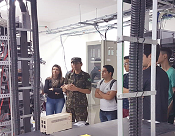
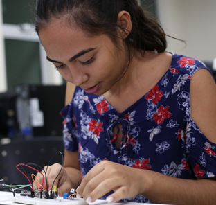

Sobre o curso
No Instituto Federal do Ceará (IFCE) campus Jaguaribe, a Graduação Tecnológica em Redes de Computadores forma profissionais com habilidades e competências interdisciplinar, capazes de atuar no rápido, dinâmico e crescente mercado de Tecnologia da Informação e Comunicação de Dados. Dentre as diversas atuações de um tecnólogo em Redes de Computadores, destacam-se
- Projeto, configuração e administração de redes de computadores locais, sem fio e de longa distância, presentes em corporações públicas e privadas
- Planejamento, implantação e monitoramento de políticas de segurança da informação, garantindo a proteção dos ativos de informação de pessoas e empresas.
- Governança e gestão de ambientes de Tecnologia da Informação e Comunicação, promovendo a geração de valor para o negócio.

Areas de Atuação Profissional
O egresso do curso de Redes de Computadores pode atuar em diversas atividades, como realizar testes em redes intencionando a identificação de problemas e soluções nos processos analisados, organizar e/ou coordenar equipes que deem suporte aos usuários de redes, participar de equipes de planejamento de redes de voz, dados e vídeo, colaborando na elaboração de projetos de infraestrutura física de redes para transmissão de tráfego multimídia, articular e combinar teoria e prática, implantar infraestrutura de TI e garantir sua segurança. entre outras.
Projeto de Extensão
Detalhes da Formação
A graduação oferece formação multidisciplinar para que o estudante atue no mercado de Tecnologia da Informação e Comunicação, com formação fundamental em Computação e específica em Redes de Computadores. Através dos componentes curriculares teóricos e práticos, o estudante adquire conhecimentos em redes de computadores, gestão de projetos, governança e gestão de tecnologia da informação, segurança da informação, banco de dados, sistemas operacionais, arquitetura de computadores, sistemas de informação, e programação de computadores.
Atividades de Pesquisa e Extensão
Em um curso de Ensino Superior, a formação multidisciplinar só é completa quando o estudante vivencia as atividades de pesquisa científica e projetos de extensão junto à comunidade. Conheça os projetos de pesquisa e extensão em andamento na Graduação Tecnológica em Redes de Computadores.
